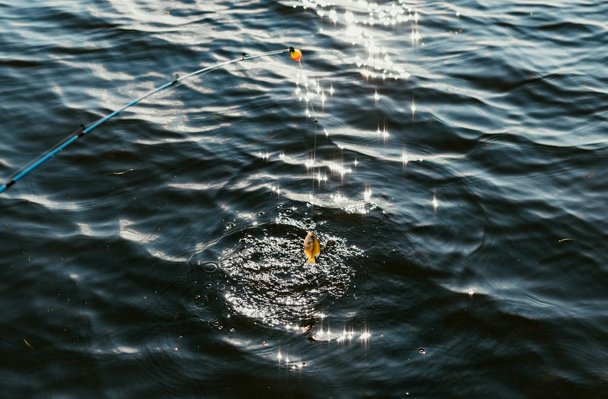

A Krill Fishery Works the Water Where Young Penguins Learn to Feed
The reported encounters fall in a bird's first year at sea, the stretch in which it acquires its feeding knowledge. That timing is what makes the finding hard to manage around, and the study's own figures were not available to this desk.

The finding, stated as carefully as it can be
Phys.org reported on 18 November 2026 that young emperor penguins encounter industrial krill fishing during their first year at sea. The report is the only document this desk could retrieve. The study behind it, with its tag counts, its coordinates and its vessel figures, did not open. So what follows reads the finding's shape and marks every number we do not have.
The claim worth arguing about is the timing. Penguins and the krill fleet share Southern Ocean water, and that sharing is not news. What makes this report worth reading is the life stage: the birds doing the encountering are in their first year out of the colony. An adult pushed off a feeding ground still carries a record of where food was last season. A juvenile has no record yet. It must build one in the same water the fleet is working.
What a first year at sea is for
Everything here is reasoning from the standard natural history of the species, not measurement from the study. Emperor penguins are an ice-breeding penguin: chicks and fledglings depend on stable sea ice near the colony. The bird that leaves for the first time has never fed itself at sea. It has a body built for diving and no knowledge of where to spend it. That knowledge is acquired during the years when survival is lowest, which is why biologists track cohorts and not whole populations.
Krill sits low and dense in that water, which is why a fishery aimed at it draws attention from whales, seals and penguins at once. Remove krill from a place and the animals that come there must travel further or switch prey. Whether the fleet removes enough krill to matter is a quota question. Whether it is standing in the right place at the wrong moment in a bird's life is another question. This report speaks to the second.
Why a young bird's track is better evidence than a count
Population trend is the usual currency of this argument. A colony gets smaller, someone publishes a number, the debate reopens. That number arrives years after the mechanism that caused it, and it arrives bundled with every other cause in the Southern Ocean. A logger on a bird in its first year at sea produces a different kind of record. It says where an animal actually went, and when. Fisheries publish effort data, so the two records can be laid on top of each other.
This is the part of the finding that a reader should hold on to. Overlap between a predator and a fishery is two layers of data, and it can be wrong in only the ordinary ways. Devices go on penguins across the back, usually attached rather than worn, and a bird that has never fed still has to learn to swim with one of them. The ways a track can mislead are worth listing, because they are the same ways every tracking paper gets attacked.
The strongest case against
The best objection is that this is a small fishery in an ocean with a lot of penguins. Krill vessels work a fraction of the Southern Ocean shelf, and most emperor penguin colonies are nowhere near them. A bird that swims into fished water and comes back fine has told us about a route, not a decline. There is also the measurement objection, and it is the serious one. Tags are heavy on a small bird, and animals that die early stop transmitting. So the tracks in a dataset are, by construction, the tracks of the survivors.
This desk takes the objection seriously enough to say what it does not do. It does not remove the encounter. If the report is right that young emperor penguins cross into fished water in their first year, then the overlap exists regardless of fleet size. The question shifts to how much of an age class makes the crossing. That is the number this piece does not have, and it is the number every management decision depends on.
Four numbers this desk does not have
Phys.org's headline is the whole of what this desk can cite. The study's own figures did not arrive. Four of them decide what the finding means. First: how many birds carried devices, and in which seasons. Second: how far the tracks ran from the colony's ice. Third: how much fishing effort sat inside the range those birds used. Fourth: whether the fleet worked a managed area or the water beside it.
Each of those four is a hinge. A handful of birds that happened to swim near a trawler is an anecdote with a logger on it. A cohort from several colonies, crossing into fished water in the same weeks every year, is a pattern that cannot be filed under weather. Without the counts, nobody holding only the headline can tell which of the two it is. That is not a reason to distrust the finding. It is a reason to distrust anyone who behaves as if the headline had settled it.
The explanation that competes with this one
Emperor penguins are the most climate-exposed penguins that breed on ice, and that exposure is the rival explanation for most juvenile losses of recent years. Warm water thins the ice, chicks fall in, and a breeding season can fail with no trawler in sight. A manager shown a juvenile track ending near a fishing vessel has two candidate causes, and one track cannot separate them. Separating them needs many birds, tracked in years with and without a fishery nearby. That is a study design, and it is the one thing a headline cannot deliver.
Ice removes the platform.
The fleet works the shelf where a fledgling is learning to read the water. If young birds of an ice-breeding species acquire their feeding knowledge on ground a fishery is licensed to work, the two stressors are not independent questions. A system that reviews each pressure alone will clear each industry separately and miss the combination actually working on the animals. All of that is analysis. No source here says the pressures were assessed separately, and this desk did not check any assessment.
What follows for anyone who has to decide
For a reader who covers fisheries, the consequence is procedural. Juvenile tracks are a different evidence class from population counts. They should be requested on their own terms. The useful question is where the young ones went in the season they died, and whether they came back. That request is cheap, because the tracks exist as soon as devices are on birds. Effort data is usually published by the bodies that license a fleet, so the second layer is often already paid for. Layering the two is arithmetic.
For a conservation body the consequence is a scheduling problem. Krill management is argued over biomass and quota areas, at a pace measured in commission meetings. Penguin recruitment is measured in cohorts, at the pace of an animal that cannot breed until it is several years old. Those two schedules are why a finding like this keeps reaching decisions that are already made. The report puts a life stage into the transcript, and that is the modest, useful part.
Where this article stops
This piece is not a claim that krill fishing is harming emperor penguins. No source in front of this desk supports that sentence, and the missing numbers above are the ones that would. What the record supports is narrower. Young penguins of this species were found in the same water as an industrial fishery during the year they learn to feed. Whether that matters is a question with an answer this desk does not have.
Two of the numbers worth having are probably already collected. Devices go on birds because researchers want survival estimates, and licensed fleets report where they fished, because licensing asks them to. Putting the two tables in one folder is a filing job before it is a research program. Nobody outside the field funds a filing job, and this desk did not check whether anyone inside it has. The finding stays open, and the honest version of this article stops here.